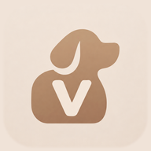

Chính sách quyền riêng tư
Vincenink · cập nhật 28/11/2026Vincenink là bảng trắng dạy học trực tuyến. Trang này giải thích dữ liệu nào được lưu, ở đâu và để làm gì.
1. Dữ liệu lưu trên máy của bạn
Dữ liệu được lưu trong trình duyệt của bạn (IndexedDB / localStorage). Khi chưa đăng nhập (chế độ khách), dữ liệu chỉ tồn tại trong phiên: tải lại trang vẫn còn, nhưng đóng hết các tab Vincenink rồi mở lại thì dữ liệu tạo trong chế độ khách bị xoá khỏi máy. Dữ liệu khách không được gửi lên máy chủ.
2. Khi bạn đăng nhập (không bắt buộc)
- Tài khoản được quản lý bởi Supabase. Khi đăng nhập bằng Google, Vincenink chỉ nhận tên, địa chỉ email và ảnh đại diện của tài khoản Google — không đọc Gmail, Drive hay dữ liệu Google nào khác.
- Được sao lưu lên máy chủ: hồ sơ (tên, vai trò, trường, liên hệ, ảnh đại diện nhỏ), lớp học kèm học phí và các tháng đã thu, lịch học, cài đặt nhắc lịch kèm múi giờ, và bảng vẽ (ảnh dán trong bảng được nén) — để dữ liệu không mất, dùng được trên nhiều thiết bị và nhận thông báo nhắc lịch.
- Không gửi lên máy chủ: tài liệu tải lên (PDF, ảnh trong mục Tài liệu).
- Trình duyệt ghi nhớ phiên đăng nhập, nên lần sau mở lại không cần đăng nhập. Mỗi tài khoản có một kho dữ liệu riêng trên máy: nhiều tài khoản dùng chung một trình duyệt cũng không gộp hay xoá dữ liệu của nhau. Đăng xuất thì về chế độ khách; dữ liệu của tài khoản vẫn được giữ.
- Mỗi tài khoản chỉ đọc/ghi được dữ liệu của chính mình (Row Level Security).
3. Thông báo nhắc lịch
Nếu bạn bật thông báo, trình duyệt cung cấp một địa chỉ nhận thông báo (push subscription). Vincenink lưu địa chỉ này để gửi nhắc lịch và xoá khi bạn tắt thông báo hoặc đăng xuất.
4. Dịch vụ bên thứ ba
- Thời tiết & vị trí: nếu bạn cho phép, vị trí của trình duyệt được gửi tới Open-Meteo (thời tiết) và BigDataCloud (tên khu vực). Vị trí không được lưu trên máy chủ Vincenink.
- Trợ lý AI: câu hỏi bạn gửi và thông tin ngữ cảnh (lịch hôm nay, tên lớp) được chuyển tới nhà cung cấp AI (Google Gemini, Groq hoặc Anthropic) để tạo câu trả lời.
- Lưu trữ web: Vercel (máy chủ trang web), Supabase (tài khoản và dữ liệu đồng bộ).
5. Chúng tôi không làm
Không bán dữ liệu, không quảng cáo, không dùng dữ liệu của bạn để theo dõi hay lập hồ sơ.
6. Xoá dữ liệu
Đăng xuất sẽ ngừng đồng bộ trên thiết bị đó. Để xoá hẳn tài khoản và dữ liệu đã đồng bộ, hãy gửi yêu cầu tại github.com/qVinh-softw87/Vincenink/issues; yêu cầu được xử lý trong vòng 7 ngày. Dữ liệu trên máy có thể xoá bằng cách xoá dữ liệu trang web trong cài đặt trình duyệt.
7. Liên hệ
github.com/qVinh-softw87/Vincenink/issues
Privacy Policy
Vincenink is an online teaching whiteboard. This page explains what data is stored, where, and why.
1. Data stored on your device
Data is stored in your browser (IndexedDB / localStorage). When you are not signed in (guest mode), data lasts only for the session: reloading keeps it, but closing every Vincenink tab removes data created in guest mode. Guest data is never sent to Vincenink servers.
2. When you sign in (optional)
- Accounts are managed by Supabase. With Google sign-in, Vincenink receives only your name, email address and profile picture — it does not access Gmail, Drive or any other Google data.
- Backed up to the server: profile, classes with fees and paid months, schedules, reminder settings with your time zone, and boards (pasted images are compressed), so nothing is lost and you can use several devices and receive reminders.
- Not sent to the server: uploaded documents (PDFs, images in Files). Your browser remembers your sign-in. Each account has its own local data store, so several accounts on one browser never merge or delete each other's data. Signing out returns to guest mode; your account data is kept. Each account can only access its own data (Row Level Security).
3. Reminder notifications
If you enable notifications, your browser provides a push subscription that Vincenink stores to send reminders; it is deleted when you turn notifications off or sign out.
4. Third-party services
Open-Meteo and BigDataCloud (weather and place name, only if you allow location), Google Gemini / Groq / Anthropic (AI assistant), Vercel (hosting), Supabase (accounts and sync).
5. What we don’t do
We don’t sell data, show ads, or track or profile you.
6. Deleting your data
Open a request at github.com/qVinh-softw87/Vincenink/issues to delete your account and synced data (handled within 7 days). Local data can be removed by clearing site data in your browser.